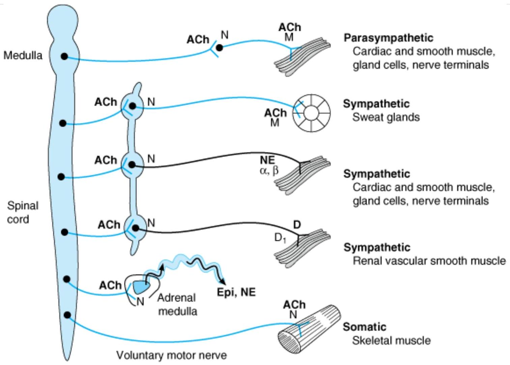
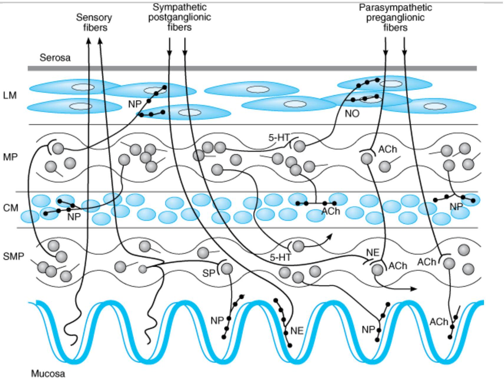
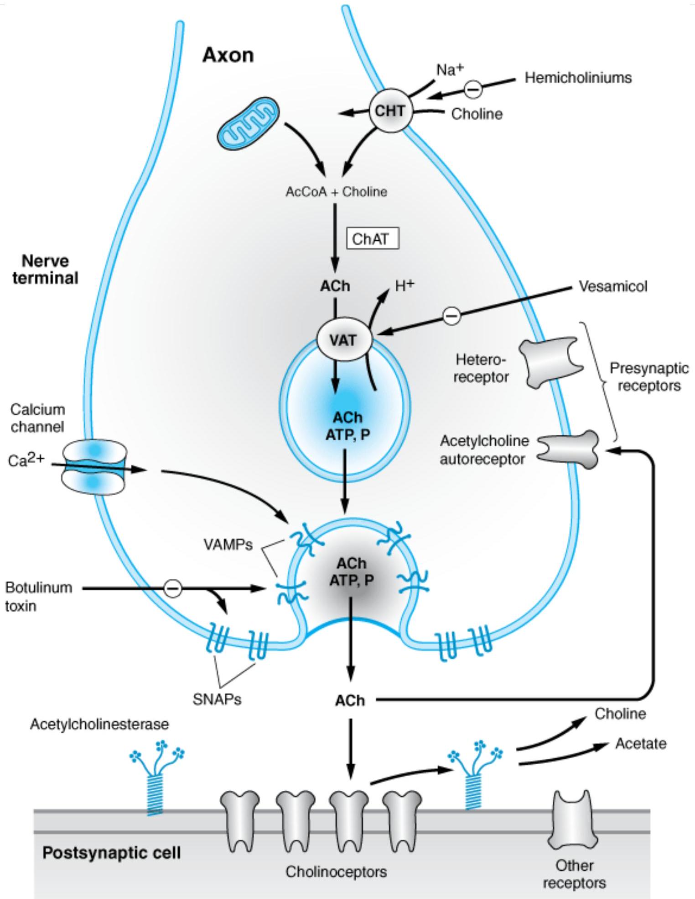
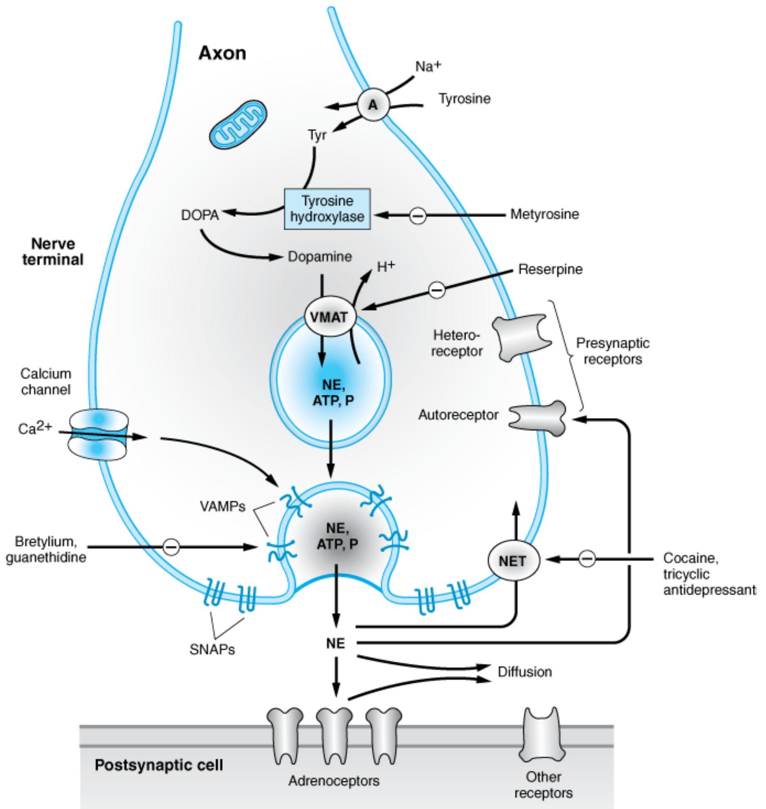
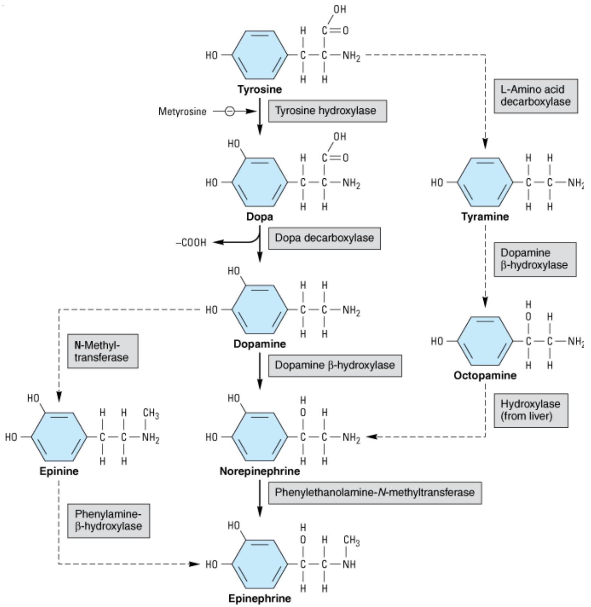
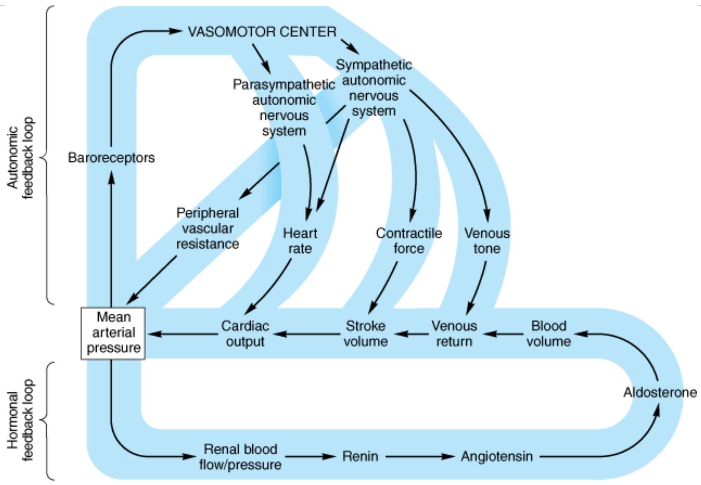
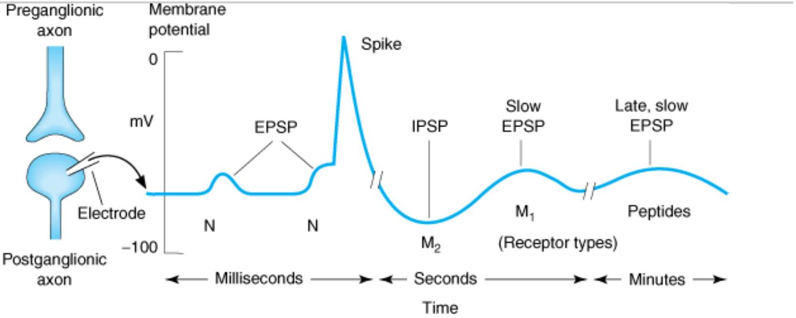
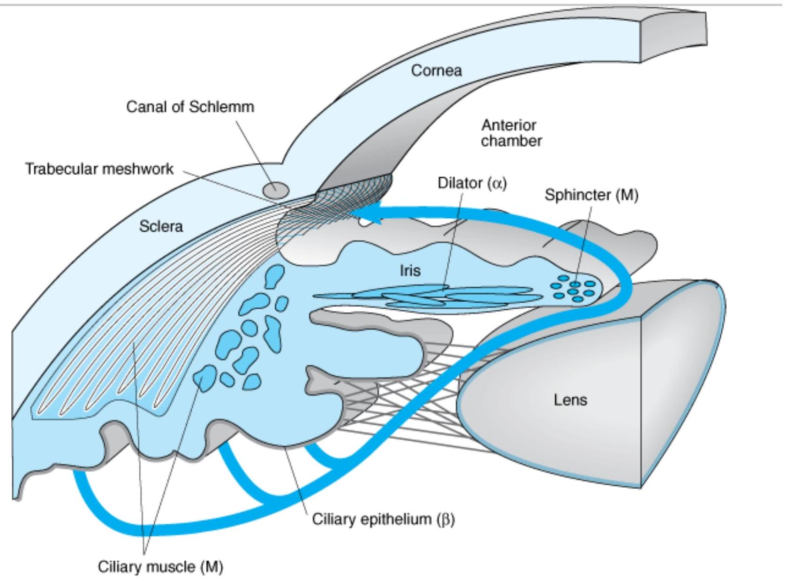

I NTRODUCTION TO AUTONOMI C PHARMACOLOGY
The motor (efferent) portion of the nervous system can be divided into two major subdivisions: autonomic anc somatic. The autonomic nervous system (ANS) is largely autonomous (independent) in that its activities are not under direct conscious control. It is concerned primarily with visceral functions such as cardiac output, blood flow to various organs, and digestion, which are necessary for life. The somatic division is largely concerned with consciously controlled functions such as movement, respiration, and posture. Both systems have important afferent (sensory) inputs that provide information regarding the internal and external environments and modify motor output through reflex arcs of varying size and complexity.
The nervous system has several properties in common with the endocrine system, which is the other major system for control of body function. These include high-level integration in the brain, the ability to influence processes in distant regions of the body, and extensive use of negative feedback. Both systems use chemicals for the transmission of information. In the nervous system, chemical transmission occurs between nerve cells and their effector cells. Chemical transmission takes place through the release of small amounts of transmitter substances from the nerve terminals into the synaptic cleft. The transmitter crosses the cleft by diffusion and activates or inhibits the postsynaptic cell by binding to a specialized receptor molecule.
By using drugs that mimic or block the actions of chemical transmitters, we can selectively modify many autonomic functions. These functions involve a variety of effector tissues, including cardiac muscle, smooth muscle, vascular endothelium, exocrine glands, and presynaptic nerve terminals. Autonomic drugs are useful in many clinical conditions. However, a very large number of drugs used for other purposes have unwanted effect: on autonomic function.
ANATOMY OF THE AUTONOMI C NERVOUS SYSTEM
The autonomic nervous system lends itself to division on anatomic grounds into two major portions: the sympathetic (thoracolumbar) division and the parasympathetic (craniosacral) division (Figure 6-1). Botl divisions originate in nuclei within the central nervous system and give rise to preganglionic efferent fibers that exit from the brain stem or spinal cord and terminate in motor ganglia. The sympathetic preganglionic fibers leave the central nervous system through the thoracic and lumbar spinal nerves. The parasympathetic preganglionic fibers leave the central nervous system through the cranial nerves (especially the third, seventh, ninth, and tenth) and the third and fourth sacral spinal roots.
Copyright ©2006 by The McGraw-Hill Companies, Inc. All rights reserved.
All rights reserved.
Schematic diagram comparing some anatomic and neurotransmitter features of autonomic and somatic motor nerves. Only the primary transmitter substances are shown. Parasympathetic ganglia are not shown because most are in or near the wall of the organ innervated. Cholinergic nerves are shown in color. Note that some sympathetic postganglionic fibers release acetylcholine or dopamine rather than norepinephrine. The adrenal medulla, a modified sympathetic ganglion, receives sympathetic preganglionic fibers and releases epinephrine and norepinephrine into the blood. (ACh, acetylcholine; D, dopamine; Epi, epinephrine; NE, norepinephrine; N, nicotinic receptors; M, muscarinic receptors.)
Most of the sympathetic preganglionic fibers terminate in ganglia located in the paravertebral chains that lie on either side of the spinal column. The remaining sympathetic preganglionic fibers terminate in prevertebral ganglia, which lie in front of the vertebrae, usually on the surface of the aorta. From the ganglia, postganglionic sympathetic fibers run to the tissues innervated. Some preganglionic parasympathetic fibers terminate in parasympathetic ganglia located outside the organs innervated: the ciliary, pterygopalatine, submandibular, otic, and several pelvic ganglia. The majority of parasympathetic preganglionic fibers terminate on ganglion cells distributed diffusely or in networks in the walls of the innervated organs. Note that the terms "sympathetic" and "parasympathetic" are anatomic designations and do not depend on the type of transmitter chemical released from the nerve endings nor on the kind of effect—excitatory or inhibitory—evoked by nerve activity.
In addition to these clearly defined peripheral motor portions of the ANS, large numbers of afferent fibers run from the periphery to integrating centers, including the enteric plexuses in the gut, the autonomic ganglia, and the central nervous system. Many of the sensory neurons that end in the central nervous system terminate in the integrating centers of the hypothalamus and medulla and evoke reflex motor activity that is carried to the effector cells by the efferent fibers described above. There is increasing evidence that some of these sensory fibers also have peripheral motor functions (see Nonadrenergic, Noncholinergic Neurons, below).
The enteric nervous system (ENS) is a large and highly organized collection of neurons located in the walls of the gastrointestinal system (Figure 6-2). It is sometimes considered a third division of the ANS. The ENS includes the myenteric plexus (the plexus of Auerbach) and the submucous plexus (the plexus of Meissner). These neuronal networks receive preganglionic fibers from the parasympathetic system and postganglionic sympathetic axons. They also receive sensory input from within the wall of the gut. Fibers from the cell bodies in these plexuses travel to the smooth muscle of the gut to control motility and to secretory cells in the mucosa Sensory fibers transmit information from the mucosa and from stretch receptors to motor neurons in the plexuses and to postganglionic neurons in the sympathetic ganglia. The parasympathetic and sympathetic fibers that synapse on enteric plexus neurons appear to play a modulatory role, as indicated by the observation that deprivation of input from both ANS divisions does not completely halt activity in the plexuses nor in the smooth muscle and glands innervated by them.
Copyright ©2006 by The McGraw-Hill Companies, Inc. All rights reserved.
A highly simplified diagram of the intestinal wall and some of the circuitry of the enteric nervous system (ENS). The ENS receives input from both the sympathetic and the parasympathetic systems and sends afferent impulses to sympathetic ganglia and to the central nervous system. Many transmitter or neuromodulator substances have been identified in the ENS; see Table 6-1. (LM, longitudinal muscle layer; MP, myenteric plexus; CM, circular muscle layer; SMP, submucosal plexus; ACh, acetylcholine; NE, norepinephrine; NO, nitric oxide; NP, neuropeptides; SP, substance P; 5-HT, serotonin.)
NEUROTRANSMI TTER CHEMI STRY OF THE AUTONOMI C NERVOUS SYSTEM
An important traditional classification of autonomic nerves is based on the primary transmitter molecules—acetylcholine or norepinephrine—released from their terminal boutons and varicosities. A large number of peripheral ANS fibers synthesize and release acetylcholine; they are cholinergic fibers, ie, they act by releasing acetylcholine. As shown in Figure 6-1, these include all preganglionic efferent autonomic fibers anc the somatic (nonautonomic) motor fibers to skeletal muscle as well. Thus, almost all efferent fibers leaving the central nervous system are cholinergic. In addition, most parasympathetic postganglionic and a few sympathetic postganglionic fibers are cholinergic. A significant number of parasympathetic postganglionic neurons utilize nitric oxide or peptides for transmission. Most postganglionic sympathetic fibers release norepinephrine (also known as noradrenaline); they are noradrenergic (often called simply "adrenergic") fibers; that is, they act by releasing norepinephrine. These transmitter characteristics are presented schematically in Figure 6-1. As noted above, a few sympathetic fibers release acetylcholine. Dopamine is a vers important transmitter in the central nervous system, and there is evidence that it may be released by some peripheral sympathetic fibers. Adrenal medullary cells, which are embryologically analogous to postganglionic sympathetic neurons, release a mixture of epinephrine and norepinephrine. Finally, most autonomic nerves alsc release several transmitter substances, or cotransmitters, in addition to the primary transmitters described above.
Five key features of neurotransmitter function provide potential targets for pharmacologic therapy: synthesis, storage, release, and termination of action of the transmitter, and functions of the receptor. These processes are discussed in detail below.
| Substance | Probable Roles |
|---|---|
| Acetylcholine (ACh) | The primary transmitter at ANS ganglia, at the somatic neuromuscular junction, and at parasympathetic postganglionic nerve endings. A primary excitatory transmitter to smooth muscle and secretory cells in the ENS Probably also the major neuron-to-neuron ("ganglionic") transmitter in the ENS. |
| Adenosine triphosphate (ATP) | Acts as a transmitter or cotransmitter at many ANS-effector synapses. |
| Calcitonin gene-related peptide (CGRP) | Found with substance P in cardiovascular sensory nerve fibers. Present in some secretomotor ENS neurons and interneurons. A cardiac stimulant. |
| Cholecystokinin (CCK) | May act as a cotransmitter in some excitatory neuromuscular ENS neurons. |
| Dopamine | A modulatory transmitter in some ganglia and the ENS. Probably a postganglionic sympathetic transmitter in renal blood vessels. |
| Enkephalin and related opioid peptides | Present in some secretomotor and interneurons in the ENS. Appear to inhibit ACh release and thereby inhibit peristalsis. May stimulate secretion. |
| Galanin | Present in secretomotor neurons; may play a role in appetite-satiety mechanisms. |
| GABA ( $\gamma$-aminobutyric acid) | May have presynaptic effects on excitatory ENS nerve terminals. Has some relaxant effect on the gut. Probably not a major transmitter in the ENS. |
| Gastrin-releasing peptide (GRP) | Extremely potent excitatory transmitter to gastrin cells. Also known as mammalian bombesin. |
| Neuropeptide Y (NPY) | Found in many noradrenergic neurons. Present in some secretomotor neurons in the ENS and may inhibit secretion of water and electrolytes by the gut. Causes long-lasting vasoconstriction. It is also a cotransmitter in some parasympathetic postganglionic neurons. |
| Nitric oxide (NO) | A cotransmitter at inhibitory ENS neuromuscular junctions; may be especially important at sphincters. |
| Norepinephrine (NE) | The primary transmitter at most sympathetic postganglionic nerve endings. |
| Serotonin (5-HT) | An important transmitter or cotransmitter at excitatory neuron-to-neuron junctions in the ENS. |
| Substance P (and related "tachykinins") | Substance P is an important sensory neuron transmitter in the ENS and elsewhere. Tachykinins appear to be excitatory cotransmitters with ACh at ENS neuromuscular junctions. Found with CGRP in cardiovascular sensory neurons. Substance P is a vasodilator (probably via release of nitric oxide). |
| Vasoactive intestinal peptide (VIP) | Excitatory secretomotor transmitter in the ENS; may also be an inhibitory ENS neuromuscular cotransmitter. A probable cotransmitter in many cholinergic neurons. A vasodilator (found in many perivascular neurons) and cardiac stimulant. |
${}^{1}$ See Chapter 21 for transmitters found in the central nervous system.
Cholinergic Transmission
The terminals of cholinergic neurons contain large numbers of small membrane-bound vesicles concentrated near the synaptic portion of the cell membrane (Figure 6-3) as well as a smaller number of large dense-cored vesicles located farther from the synaptic membrane. The large vesicles contain a high concentration of peptide cotransmitters (Table 6-1), whereas the smaller clear vesicles contain most of the acetylcholine. Vesicles are initially synthesized in the neuron soma and transported to the terminal. They may also be recycled several times within the terminal. Vesicles are provided with vesicle-associated membrane proteins (VAMPs), which serve to align them with release sites on the inner neuronal cell membrane and participate in triggering the release of transmitter. The corresponding release site on the inner surface of the nerve terminal membrane contains synaptosomal nerve-associated proteins (SNAPs).
Copyright ©2006 by The McGraw-Hill Companies, Inc. All rights reserved.
Schematic illustration of a generalized cholinergic junction (not to scale). Choline is transported into the presynaptic nerve terminal by a sodium-dependent choline transporter (CHT). This transporter can be inhibited by hemicholinium drugs. In the cytoplasm, acetylcholine is synthesized from choline and acetyl Co-A (AcCoA) by the enzyme choline acetyltransferase (ChAT). ACh is then transported into the storage vesicle by a second carrier, the vesicle-associated transporter (VAT), which can be inhibited by vesamicol. Peptides (P), adenosine triphosphate (ATP), and proteoglycan are also stored in the vesicle. Release of transmitter occurs when voltage-sensitive calcium channels in the terminal membrane are opened, allowing an influx of calcium. The resulting increase in intracellular calcium causes fusion of vesicles with the surface membrane and exocytotic expulsion of ACh and cotransmitters into the junctional cleft (see text). This step can be blocked by botulinum toxin. Acetylcholine's action is terminated by metabolism by the enzyme acetylcholinesterase. Receptors on the presynaptic nerve ending regulate transmitter release. (SNAPs, synaptosome-associated proteins; VAMPs, vesicle-associated membrane proteins.)
Acetylcholine is synthesized in the cytoplasm from acetyl-CoA and choline through the catalytic action of the enzyme choline acetyltransferase (ChAT). Acetyl-CoA is synthesized in mitochondria, which are present in large numbers in the nerve ending. Choline is transported from the extracellular fluid into the neuron terminal by a sodium-dependent membrane choline transporter (Figure 6-3, CHT ). This symporter can be blocked by a group of research drugs called hemicholiniums. Once synthesized, acetylcholine is transported from the cytoplasm into the vesicles by a vesicle-associated transporter that is driven by proton efflux (Figure 6-3, carrier VAT ). This antiporter can be blocked by the research drug vesamicol. Acetylcholine synthesis is a rapid process capable of supporting a very high rate of transmitter release. Storage of acetylcholine is accomplished by the packaging of "quanta" of acetylcholine molecules (usually 1000-50,000 molecules in each vesicle).
Vesicles are concentrated on the inner surface of the nerve terminal facing the synapse through the interaction of so-called SNARE proteins on the vesicle (VAMPs called v-SNAREs, especially synaptobrevin) and on the inside of the neuronal cell membrane (SNAPs called t-SNAREs, especially syntaxin and SNAP-25). Release of transmitter from the vesicles is dependent on extracellular calcium and occurs when an action potential reaches the terminal and triggers sufficient influx of calcium ions. Calcium interacts with the VAMP synaptotagmin on the vesicle membrane and triggers fusion of the vesicle membrane with the terminal membrane and opening of a pore into the synapse. The opening of the pore results in exocytotic expulsion—in the case of somatic motor nerves—of several hundred quanta of acetylcholine into the synaptic cleft. The amount of transmitter released by one depolarization of an autonomic postganglionic nerve terminal is probably smaller. In addition to acetylcholine, several cotransmitters are released at the same time (Table 6-1). The acetylcholine vesicle release process is blocked by botulinum toxin through the enzymatic removal of two amino acids from one or more of the fusion proteins.
After release from the presynaptic terminal, acetylcholine molecules may bind to and activate an acetylcholine receptor (cholinoceptor). Eventually (and usually very rapidly), all of the acetylcholine released diffuses withir range of an acetylcholinesterase (AChE) molecule. AChE very efficiently splits acetylcholine into choline and acetate, neither of which has significant transmitter effect, and thereby terminates the action of the transmitter (Figure 6-3). Most cholinergic synapses are richly supplied with acetylcholinesterase; the half-life of acetylcholine in the synapse is therefore very short (seconds). Acetylcholinesterase is also found in other tissues, eg, red blood cells. (Another cholinesterase with a lower specificity for acetylcholine, butyrylcholinesterase [pseudocholinesterase], is found in blood plasma, liver, glia, and many other tissues.)
Adrenergic Transmission
Adrenergic neurons (Figure 6-4) also transport a precursor molecule into the nerve ending, then synthesize the catecholamine transmitter, and finally store it in membrane-bound vesicles, but, as indicated in Figure 6-5, the synthesis of the catecholamine transmitters is more complex than that of acetylcholine. In most sympathetic postganglionic neurons, norepinephrine is the final product. In the adrenal medulla and certain areas of the brain, norepinephrine is further converted to epinephrine. In dopaminergic neurons, synthesis terminates with dopamine. Several processes in these nerve terminals are potential sites of drug action. One of these, the conversion of tyrosine to dopa, is the rate-limiting step in catecholamine transmitter synthesis. It can be inhibited by the tyrosine analog metyrosine (Figure 6-4). A high-affinity carrier for catecholamines located in the wall of the storage vesicle (vesicular monoamine transporter, VMAT) can be inhibited by the reserpinı alkaloids (Figure 6-4, carrier VMAT). Reserpine causes depletion of transmitter stores. Another transporter (norepinephrine transporter, NET) carries norepinephrine and similar molecules back into the cell cytoplasn from the synaptic cleft (Figure 6-4, NET). NET is also commonly called uptake 1 or reuptake 1 . NET can be inhibited by cocaine and tricyclic antidepressant drugs, resulting in an increase of transmitter activity in the synaptic cleft. Similar transporters (DAT, SERT) are responsible for the reuptake of dopamine and 5-HT (serotonin), respectively, into the neurons that release these transmitters.
Copyright ©2006 by The McGraw-Hill Companies, Inc. All rights reserved.
Schematic diagram of a generalized noradrenergic junction (not to scale). Tyrosine is transported into the noradrenergic ending or varicosity by a sodium-dependent carrier (A). Tyrosine is converted to dopamine (see Figure 6-5 for details), which is transported into the vesicle by the vesicular monoamine transporter (VMAT), which can be blocked by reserpine. The same carrier transports norepinephrine (NE) and several other amines into these granules. Dopamine is converted to NE in the vesicle by dopamine-B-hydroxylase. Physiologic release of transmitter occurs when an action potential opens voltagesensitive calcium channels and increases intracellular calcium. Fusion of vesicles with the surface membrane results in expulsion of norepinephrine, cotransmitters, and dopamine- B-hydroxylase. Release can be blocked by drugs such as guanethidine and bretylium. After release, norepinephrine diffuses out of the cleft or is transported into the cytoplasm of the terminal by the norepinephrine transporter (NET), which can be blocked by cocaine and tricyclic antidepressants, or into postjunctional or perijunctional cells. Regulatory receptors are present on the presynaptic terminal. (SNAPs, synaptosomeassociated proteins; VAMPs, vesicle-associated membrane proteins.)
 Dopa (via Tyrosine hydroxylase, inhibited by Metyrosine) -> Dopamine (via Dopa decarboxylase) -> Norepinephrine (via Dopamine-B-hydroxylase) -> Epinephrine (via Phenylethanolamine N-methyltransferase). Also shows alternative pathways from Tyramine and Octopamine." class="content-image">Copyright ©2006 by The McGraw-Hill Companies, Inc. All rights reserved.
Biosynthesis of catecholamines. The rate-limiting step, conversion of tyrosine to dopa, can be inhibited by metyrosine (cimethyltyrosine). The alternative pathways shown by the dashed arrows have not been found to be of physiologic significanc in humans. However, tyramine and octopamine may accumulate in patients treated with monoamine oxidase inhibitors. (Reproduced, with permission, from Greenspan FS, Gardner DG (editors): Basic and Clinical Endocrinology, 7th ed. McGrawHill, 2003.)
Release of the vesicular transmitter store from noradrenergic nerve endings is similar to the calcium-dependent process described above for cholinergic terminals. In addition to the primary transmitter (norepinephrine), adenosine triphosphate (ATP), dopamine-B-hydroxylase, and peptide cotransmitters are also released into the synaptic cleft. Indirectly acting and mixed sympathomimetics, eg, tyramine, amphetamines, and ephedrine are capable of releasing stored transmitter from noradrenergic nerve endings by a calcium-independent process. These drugs are poor agonists (some are inactive) at adrenoceptors, but they are excellent substrates for monoamine transporters. As a result, they are avidly taken up into noradrenergic nerve endings by NET. In the nerve ending, they are then transported by VMAT into the vesicles, displacing norepinephrine, which is subsequently expelled into the synaptic space by reverse transport via NET. Amphetamines also inhibit monoamine oxidase and have other effects that result in increased norepinephrine activity in the synapse. Theil action does not require vesicle exocytosis.
Copyright ©2006 by The McGraw-Hill Companies, Inc. All rights reserved.
Metabolism of catecholamines by catechol-O- methyltransferase (COMT) and monoamine oxidase (MAO). (Modified and reproduced, with permission, from Greenspan FS, Gardner DG (editors): Basic and Clinical Endocrinology, 7th ed. McGrawHill, 2003.)
Norepinephrine and epinephrine can be metabolized by several enzymes, as shown in Figure 6-6. Because of the high activity of monoamine oxidase in the mitochondria of the nerve terminal, there is significant turnover of norepinephrine even in the resting terminal. Since the metabolic products are excreted in the urine, an estimate of catecholamine turnover can be obtained from laboratory analysis of total metabolites (sometimes referred to as "VMA and metanephrines") in a 24-hour urine sample. However, metabolism is not the primary mechanism for termination of action of norepinephrine physiologically released from noradrenergic nerves. Termination of noradrenergic transmission results from two processes, simple diffusion away from the receptor site (with eventual metabolism in the plasma or liver), and reuptake into the nerve terminal by NET (Figure 6-4) or into perisynaptic glia or other cells.
Cotransmitters in Cholinergic & Adrenergic Nerves
As previously noted, the vesicles of both cholinergic and adrenergic nerves contain other substances in addition to the primary transmitter. Some of the substances identified to date are listed in Table 6-1. Many of these substances are also primary transmitters in the nonadrenergic, noncholinergic nerves described in the text that follows. Their roles in the function of nerves that release acetylcholine or norepinephrine are not yet fully understood. In some cases, they provide a faster or slower action to supplement or modulate the effects of the primary transmitter. They also participate in feedback inhibition of the same and nearby nerve terminals.
AUTONOMI C RECEPTORS
Historically, structure-activity analyses, with careful comparisons of the potency of series of autonomic agonist and antagonist analogs, led to the definition of different autonomic receptor subtypes, including muscarinic and nicotinic cholinoceptors, and $\alpha, \beta$, and dopamine adrenoceptors (Table 6-2). Subsequently, binding of isotopelabeled ligands permitted the purification and characterization of several of the receptor molecules. Molecular biology now provides techniques for the discovery and expression of genes that code for related receptors within these groups (see Chapter 2).
| Receptor Name | Typical Locations | Result of Ligand Binding |
|---|---|---|
| Cholinoceptors | ||
| Muscarinic $\mathrm{M}_{1}$ | CNS neurons, sympathetic postganglionic neurons, some presynaptic sites | Formation of $\mathrm{IP}_{3}$ and DAG, increased intracellular calcium |
| Muscarinic $\mathrm{M}_{2}$ | Myocardium, smooth muscle, some presynaptic sites; CNS neurons | Opening of potassium channels, inhibition of adenylyl cyclase |
| Muscarinic $\mathrm{M}_{3}$ | Exocrine glands, vessels (smooth muscle and endothelium); CNS neurons | Like $\mathrm{M}_{1}$ receptor-ligand binding |
| Muscarinic $\mathrm{M}_{4}$ | CNS neurons; possibly vagal nerve endings | Like $\mathrm{M}_{2}$ receptor-ligand binding |
| Muscarinic $\mathrm{M}_{5}$ | Vascular endothelium, especially cerebral vessels; CNS neurons | Like $\mathrm{M}_{1}$ receptor-ligand binding |
| Nicotinic $\mathrm{N}_{\mathrm{N}}$ | Postganglionic neurons, some presynaptic cholinergic terminals | Opening of $\mathrm{Na}^{+}$, $\mathrm{K}^{+}$channels, depolarization |
| Nicotinic $\mathrm{N}_{\mathrm{M}}$ | Skeletal muscle neuromuscular endplates | Opening of $\mathrm{Na}^{+}$, $\mathrm{K}^{+}$channels, depolarization |
| Adrenoceptors | ||
| Alpha $_{1}$ | Postsynaptic effector cells, especially smooth muscle | Formation of $\mathrm{IP}_{3}$ and DAG, increased intracellular calcium |
| Alpha2 | Presynaptic adrenergic nerve terminals, platelets, lipocytes, smooth muscle | Inhibition of adenylyl cyclase, decreased cAMP |
| Beta $_{1}$ | Postsynaptic effector cells, especially heart, lipocytes, brain; presynaptic adrenergic and cholinergic nerve terminals, juxtaglomerular apparatus of renal tubules, ciliary body epithelium | Stimulation of adenylyl cyclase, increased cAMP |
| Beta $_{2}$ | Postsynaptic effector cells, especially smooth muscle and cardiac muscle | Stimulation of adenylyl cyclase and increased cAMP. Activates cardiac Gi under some conditions. |
| Beta $_{3}$ | Postsynaptic effector cells, especially lipocytes; heart | Stimulation of adenylyl cyclase and increased CAMP ${}^{1}$ |
| Dopamine receptors | ||
| $\mathrm{D}_{1}\left(\mathrm{DA}_{1}\right)$, $\mathrm{D}_{5}$ | Brain; effector tissues, especially smooth muscle of the renal vascular bed | Stimulation of adenylyl cyclase and increased cAMP |
| $\mathrm{D}_{2}\left(\mathrm{DA}_{2}\right)$ | Brain; effector tissues, especially smooth muscle; presynaptic nerve terminals | Inhibition of adenylyl cyclase; increased potassium conductance |
| $\mathrm{D}_{3}$ | Brain | Inhibition of adenylyl cyclase |
| D 4 | Brain, cardiovascular system | Inhibition of adenylyl cyclase |
${}^{1}$ Cardiac beta${}_{3}$-receptor function is poorly understood, but activation does not appear to result in stimulation of rate or force.
The primary acetylcholine receptor subtypes were named after the alkaloids originally used in their identification: muscarine and nicotine. These nouns are readily converted into adjectives—thus, muscarinic and nicotinic receptors. In the case of receptors associated with noradrenergic nerves, the coining of simple adjectives from the names of the agonists (noradrenaline, phenylephrine, isoproterenol, etc) was not practicable. Therefore, the term adrenoceptor is widely used to describe receptors that respond to catecholamines such as norepinephrine. By analogy, the term cholinoceptor denotes receptors (both muscarinic and nicotinic) that respond to acetylcholine. In North America, receptors were colloquially named after the nerves that usually innervate them; thus, adrenergic (or noradrenergic) receptors and cholinergic receptors. The general class of adrenoceptors can be further subdivided into a-adrenoceptor, $B$ adrenoceptor, and dopamine-receptor types on the basis of both agonist and antagonist selectivity and on genomic grounds. Development of more selective blocking drugs has led to the naming of subclasses within these major types; for example, within the $\alpha_{\text {-adver}$-adrenoceptor class, $\alpha_{1}$ and $\alpha_{2}$ receptors differ in both agonist and antagonist selectivity. Specific examples of such selective drugs are given in the chapters that follow.
NONADRENERGIC, NONCHOLI NERGIC (NANC) NEURONS
It has been known for many years that autonomic effector tissues (eg, gut, airways, bladder) contain nerve fibers that do not show the histochemical characteristics of either cholinergic or adrenergic fibers. Both motor and sensory nonadrenergic, noncholinergic fibers are present. Although peptides are the most common transmitter substances found in these nerve endings, other substances, eg, nitric oxide synthase and purines, are also present in many nerve terminals (Table 6-1). Capsaicin, a neurotoxin derived from chili peppers, can cause the release of transmitter (especially substance P ) from such neurons and, if given in high doses, destruction of the neuron.
The enteric system in the gut wall (Figure 6-2) is the most extensively studied system containing nonadrenergic, noncholinergic neurons in addition to cholinergic and adrenergic fibers. In the small intestine, for example, these neurons contain one or more of the following: nitric oxide synthase, calcitonin gene-related peptide, cholecystokinin, dynorphin, enkephalins, gastrin-releasing peptide, 5-hydroxytryptamine (serotonin), neuropeptide Y, somatostatin, substance P, and vasoactive intestinal peptide. Some neurons contain as many as five different transmitters. The ENS functions in a semiautonomous manner, utilizing input from the motor outflow of the ANS for modulation of gastrointestinal activity and sending sensory information back to the central nervous system. The ENS provides the necessary synchronization of impulses that, for example, ensure forward, not backward, propulsion of gut contents and relaxation of sphincters when the gut wall contracts.
The sensory fibers in the nonadrenergic, noncholinergic systems are probably better termed "sensory-efferent" or "sensory-local effector" fibers because, when activated by a sensory input, they are capable of releasing transmitter peptides from the sensory ending itself, from local axon branches, and from collaterals that terminate in the autonomic ganglia. These peptides are potent agonists at many autonomic effector tissues.
FUNCTI ONAL ORGANI ZATI ON OF AUTONOMI C ACTI VI TY
A basic understanding of the interactions of autonomic nerves with each other and with their effector organs is essential for an appreciation of the actions of autonomic drugs, especially because of the significant reflex (compensatory) effects that may be evoked by these agents.
Central Integration
At the highest level—midbrain and medulla—the two divisions of the ANS and the endocrine system are integrated with each other, with sensory input, and with information from higher central nervous system centers. These interactions are such that early investigators called the parasympathetic system a trophotropic one (ie, leading to growth) used to "rest and digest" and the sympathetic system an ergotropic one (ie, leading to energy expenditure), which is activated for "fight or flight." Although such terms offer little insight into the mechanisms involved, they do provide simple descriptions applicable to many of the actions of the systems (Table 6-3). For example, slowing of the heart and stimulation of digestive activity are typical energy- conserving actions of the parasympathetic system. In contrast, cardiac stimulation, increased blood sugar, and cutaneous vasoconstriction are responses produced by sympathetic discharge that are suited to fighting or surviving attack.
| Effect of | Sympathetic Activity | Parasympathetic Activity | Organ Action ${}^{1}$ | Receptor ${}^{2}$ | Action | Receptor ${}^{2}$ |
|---|---|---|---|---|---|---|
| Eye | ||||||
| Iris radial muscle | Contracts | $Q_{1}$ | ||||
| Iris circular muscle | Contracts | $M_{3}$ | ||||
| Ciliary muscle | [Relaxes] | Contracts | B | $M_{3}$ | ||
| Heart | ||||||
| Sinoatrial node | Accelerates | Decelerates | $B_{1}$, $B_{2}$ | $M_{2}$ | ||
| Ectopic pacemakers | Accelerates | $B_{1}$, $B_{2}$ | ||||
| Contractility | Increases | Decreases (atria) | $B_{1}$, $B_{2}$ | $M_{2}$ | ||
| Atrioventricular node | Decrease in conduction velocity, $\dagger$ refractory period | Decrease in conduction velocity (negative dromotropy). Increase in refractory period | $B_{1}$, $B_{2}$ | $M_{2}$ | ||
| Ventricles | Small decrease in contractile strength | |||||
| Blood vessels | ||||||
| Arteries | Dilation (via EDRF). Constriction (high-dose direct effect) | |||||
| Veins | Dilation (via EDRF). Constriction (high-dose direct effect) | |||||
| Skin, splanchnic vessels | Contracts | a. | ||||
| Skeletal muscle vessels | Relaxes | [Contracts] | $B_{2}$ | a. | ||
| Relaxes | $M^{3}$ | |||||
| Endothelium | Releases EDRF ${}^{4}$ | $M_{3}$, $M_{5}{}^{5}$ | ||||
| Bronchiolar smooth muscle | Relaxes | Contracts | $B_{2}$ | $M_{3}$ | ||
| Gastrointestinal tract | ||||||
| Smooth muscle | ||||||
| Walls | Relaxes | Contracts | $\alpha_{2}$ ${}^{6}$, $B_{2}$ | $M_{3}$ | ||
| Sphincters | Contracts | Relaxes | $\alpha_{1}$ | $M_{3}$ | ||
| Secretion | Increases | $M_{3}$ | ||||
| Genitourinary smooth muscle | ||||||
| Bladder wall | Relaxes | Contracts | $B_{2}$ | $M_{3}$ | ||
| Sphincter | Contracts | Relaxes | $\alpha_{1}$ | $M_{3}$ | ||
| Uterus, pregnant | Relaxes | Contracts | $B_{2}$ | |||
| Contracts | a. | $M_{3}$ | ||||
| Penis, seminal vesicles | Ejaculation | Erection | a. | M | ||
| Pilomotor smooth muscle | Contracts | a. | ||||
| Sweat glands | ||||||
| Thermoregulatory | Increases | M | ||||
| Apocrine (stress) | Increases | 区. | ||||
| Metabolic functions | ||||||
| Liver | Gluconeogenesis | $B_{2}$, $Q_{0}$ | ||||
| Liver | Glycogenolysis | $B_{2}$, $\alpha$. | ||||
| Fat cells | Lipolysis | $B_{3}$ | ||||
| Kidney | Renin release | $B_{1}$ |
${}^{1}$ Less important actions are shown in brackets.
${}^{2}$ specific receptor type: $\alpha$= alpha, $B$= beta, M= muscarinic.
${}^{3}$ Vascular smooth muscle in skeletal muscle has sympathetic cholinergic dilator fibers.
${}^{4}$ The endothelium of most blood vessels releases EDRF (endothelium-derived relaxing factor), which causes marked vasodilation, in response to muscarinic stimuli. However, unlike the receptors innervated by sympathetic cholinergic fibers in skeletal muscle blood vessels, these muscarinic receptors are not innervated and respond only to circulating muscarinic agonists.
${}^{5}$ Cerebral blood vessels dilate in response to $M_{5}$ receptor activation.
${}^{6}$ Probably through presynaptic inhibition of parasympathetic activity.
At a more subtle level of interactions in the brain stem, medulla, and spinal cord, there are important cooperative interactions between the parasympathetic and sympathetic systems. For some organs, sensory fibers associated with the parasympathetic system exert reflex control over motor outflow in the sympathetic system. Thus, the sensory carotid sinus baroreceptor fibers in the glossopharyngeal nerve have a major influence on sympathetic outflow from the vasomotor center. This example is described in greater detail below. Similarly, parasympathetic sensory fibers in the wall of the urinary bladder significantly influence sympathetic inhibitory outflow to that organ. Within the enteric nervous system, sensory fibers from the wall of the gut synapse on both preganglionic and postganglionic motor cells that control intestinal smooth muscle and secretory cells (Figure 6-2).
Integration of Cardiovascular Function
Autonomic reflexes are particularly important in understanding cardiovascular responses to autonomic drugs. A: indicated in Figure 6-7, the primary controlled variable in cardiovascular function is mean arterial pressure. Changes in any variable contributing to mean arterial pressure (eg, a drug-induced increase in peripheral vascular resistance) evoke powerful homeostatic secondary responses that tend to compensate for the directl: evoked change. The homeostatic response may be sufficient to reduce the change in mean arterial pressure and to reverse the drug's effects on heart rate. A slow infusion of norepinephrine provides a useful example. This agent produces direct effects on both vascular and cardiac muscle. It is a powerful vasoconstrictor and, by increasing peripheral vascular resistance, increases mean arterial pressure. In the absence of reflex control—in a patient who has had a heart transplant, for example—the drug's effect on the heart is also stimulatory; that is, it increases heart rate and contractile force. However, in a subject with intact reflexes, the negative feedback baroreceptor response to increased mean arterial pressure causes decreased sympathetic outflow to the heart and a powerful increase in parasympathetic (vagus nerve) discharge at the cardiac pacemaker. As a result, the net effect of ordinary pressor doses of norepinephrine in a normal subject is to produce a marked increase in peripheral vascular resistance, an increase in mean arterial pressure, and a consistent slowing of heart rate. Bradycardia, the reflex compensatory response elicited by this agent, is the exact opposite of the drug's direct action; yet it is completely predictable if the integration of cardiovascular function by the ANS is understood.
Copyright ©2006 by The McGraw-Hill Companies, Inc. All rights reserved.
Autonomic and hormonal control of cardiovascular function. Note that two feedback loops are present: the autonomic nervous system loop and the hormonal loop. The sympathetic nervous system directly influences four major variables: peripheral vascular resistance, heart rate, force, and venous tone. It also directly modulates renin production (not shown). The parasympathetic nervous system directly influences heart rate. In addition to its role in stimulating aldosterone secretion, angiotensin II directly increases peripheral vascular resistance and facilitates sympathetic effects (not shown). Thi net feedback effect of each loop is to compensate for changes in arterial blood pressure. Thus, decreased blood pressure dut to blood loss would evoke increased sympathetic outflow and renin release. Conversely, elevated pressure due to the administration of a vasoconstrictor drug would cause reduced sympathetic outflow, reduced renin release, and increased parasympathetic (vagal) outflow.
Presynaptic Regulation
The principle of negative feedback control is also found at the presynaptic level of autonomic function. Important presynaptic feedback inhibitory control mechanisms have been shown to exist at most nerve endings. A well-documented mechanism involves the $a_{2}$ receptor located on noradrenergic nerve terminals. Thi: receptor is activated by norepinephrine and similar molecules; activation diminishes further release of norepinephrine from these nerve endings (Table 6-4). Conversely, a presynaptic Breceptor appears to facilitate the release of norepinephrine from some adrenergic neurons. Presynaptic receptors that respond to the primar! transmitter substance released by the nerve ending are called autoreceptors. Autoreceptors are usually inhibitory, but many cholinergic fibers, especially somatic motor fibers, have excitatory nicotinic autoreceptors.
| Transmitter/ Modulator | Receptor Type | Neuron Terminals Where Found |
|---|---|---|
| Inhibitory effects | ||
| Acetylcholine | $M_{2}$, $M_{1}$ | Adrenergic, enteric nervous system |
| Norepinephrine | Alpha2 | Adrenergic |
| Dopamine | $D_{2}$; less evidence for $D_{1}$ | Adrenergic |
| Serotonin (5-HT) | $5-\mathrm{HT}_{1}, 5-\mathrm{HT}_{2}, 5-\mathrm{HT}_{3}$ | Cholinergic preganglionic |
| ATP and adenosine | $P_{2}$ (ATP), $P_{1}$ (adenosine) | Adrenergic autonomic and ENS cholinergic neurons |
| Histamine | $\mathrm{H}_{3}$, possibly $\mathrm{H}_{2}$ | $\mathrm{H}_{3}$ type identified on CNS adrenergic and serotonergic neurons |
| Enkephalin | Delta (also mu, kappa) | Adrenergic, ENS cholinergic |
| Neuropeptide Y | $Y_{1}$, $Y_{2}$ (NPY) | Adrenergic, some cholinergic |
| Prostaglandin $\mathrm{E}_{1}$, $\mathrm{E}_{2}$ | $EP_{3}$ | Adrenergic |
| Excitatory effects | ||
| Epinephrine | Beta $_{2}$ | Adrenergic, somatic motor cholinergic |
| Acetylcholine | NM | Somatic motor cholinergic |
| Angiotensin II | All-1 | Adrenergic |
${}^{1}$ A provisional list. The number of transmitters and locations will undoubtedly increase with additional research.
Control of transmitter release is not limited to modulation by the transmitter itself. Nerve terminals also carry regulatory receptors that respond to many other substances. Such heteroreceptors may be activated by substances released from other nerve terminals that synapse with the nerve ending. For example, some vagal fibers in the myocardium synapse on sympathetic noradrenergic nerve terminals and inhibit norepinephrine release. Alternatively, the ligands for these receptors may diffuse to the receptors from the blood or from nearby tissues. Some of the transmitters and receptors identified to date are listed in Table 6-4. Presynaptic regulation by a variety of endogenous chemicals probably occurs in all nerve fibers.
Postsynaptic Regulation
Postsynaptic regulation can be considered from two perspectives: modulation by the history of activity at the primary receptor (which may up- or down-regulate receptor number or desensitize receptors; see Chapter 2) and modulation by other temporally associated events.
The first mechanism has been well documented in several receptor-effector systems. Up- and down-regulation are known to occur in response to decreased or increased activation, respectively, of the receptors. An extreme form of up-regulation occurs after denervation of some tissues, resulting in denervation supersensitivity of the tissue to activators of that receptor type. In skeletal muscle, for example, nicotinic receptors are normally restricted to the end plate regions underlying somatic motor nerve terminals. Surgical denervation results in marked proliferation of nicotinic cholinoceptors over all parts of the fiber, including areas not previously associated with any motor nerve junctions. A pharmacologic supersensitivity related to denervation supersensitivity occurs in autonomic effector tissues after administration of drugs that deplete transmitter stores and prevent activation of the postsynaptic receptors for a sufficient period of time. For example, prolonged administration of large doses of reserpine, a norepinephrine depleter, can cause increased sensitivity of the smooth muscle and cardiac muscle effector cells served by the depleted sympathetic fibers.
The second mechanism involves modulation of the primary transmitter-receptor event by events evoked by the same or other transmitters acting on different postsynaptic receptors. Ganglionic transmission is a good example of this phenomenon (Figure 6-8). The postganglionic cells are activated (depolarized) as a result of binding of an appropriate ligand to a neuronal nicotinic ( $\mathrm{N}_{\mathrm{N}}$ ) acetylcholine receptor. The resulting fast excitatory postsynaptic potential (EPSP) evokes a propagated action potential if threshold is reached. This even is often followed by a small and slowly developing but longer-lasting hyperpolarizing afterpotential—a slow inhibitory postsynaptic potential (IPSP). The hyperpolarization involves opening of potassium channels by $\mathrm{M}_{2}$ cholinoceptors. The IPSP is followed by a small, slow excitatory postsynaptic potential caused by closure of potassium channels linked to $\mathrm{M}_{1}$ cholinoceptors. Finally, a late, very slow EPSP may be evoked by peptides released from other fibers. These slow potentials serve to modulate the responsiveness of the postsynaptic cell to subsequent primary excitatory presynaptic nerve activity. (See Chapter 21 for additional examples.)
Copyright ©2006 by The McGraw-Hill Companies, Inc. All rights reserved.
Excitatory and inhibitory postsynaptic potentials (EPSP and IPSP) in an autonomic ganglion cell. The postganglionic neuron shown at the left with a recording electrode might undergo the membrane potential changes shown schematically in the recording. The response begins with two EPSP responses to nicotinic (N) receptor activation, the first not reaching threshold The action potential is followed by an IPSP, probably evoked by $\mathrm{M}_{2}$ receptor activation (with possible participation from dopamine receptor activation). The IPSP is, in turn, followed by a slower, $\mathrm{M}_{1}$-dependent EPSP, and this is sometimes
PHARMACOLOGIC MODI FI CATI ON OF AUTONOMI C FUNCTI ON
Because transmission involves different mechanisms in different segments of the ANS, some drugs produce highly specific effects, whereas others are much less selective in their actions. A summary of the steps in transmission of impulses, from the central nervous system to the autonomic effector cells, is presented in Table 6-5. Drugs that block action potential propagation (local anesthetics) are very nonselective in their action, sinct they act on a process that is common to all neurons. On the other hand, drugs that act on the biochemical processes involved in transmitter synthesis and storage are more selective, since the biochemistry of adrenergic transmission is very different from that of cholinergic transmission. Activation or blockade of effector cell receptors offers maximum flexibility and selectivity of effect: adrenoceptors are easily distinguished from cholinoceptors. Furthermore, individual subgroups can often be selectively activated or blocked within each major type. Some examples are given in Pharmacology of the Eye.
| Process Affected | Drug Example | Site | Action |
|---|---|---|---|
| Action potential propagation | Local anesthetics, tetrodotoxin, ${}^{1}$ saxitoxin ${}^{2}$ | Nerve axons | Block sodium channels; block conduction |
| Transmitter synthesis | Hemicholinium | Cholinergic nerve terminals: membrane | Blocks uptake of choline and slows synthesis |
| a.-Methyltyrosine (metyrosine) | Adrenergic nerve terminals and adrenal medulla: cytoplasm | Blocks synthesis | |
| Transmitter storage | Vesamicol | Cholinergic terminals vesicles | Prevents storage, depletes |
| Reserpine | Adrenergic terminals vesicles | Prevents storage, depletes | |
| Transmitter release | Many ${}^{3}$ | Nerve terminal membrane receptors | Modulate release |
| o-Conotoxin GVIA ${}^{4}$ | Nerve terminal calcium channels | Reduces transmitter release | |
| Botulinum toxin | Cholinergic vesicles | Prevents release | |
| a.-Latrotoxin ${}^{5}$ | Cholinergic and adrenergic vesicles | Causes explosive transmitter release | |
| Tyramine, amphetamine | Adrenergic nerve terminals | Promote transmitter release | |
| Transmitter uptake after release | Cocaine, tricyclic antidepressants | Adrenergic nerve terminals | Inhibit uptake; increase transmitter effect on postsynaptic receptors |
| Receptor activation or blockade | Norepinephrine | Receptors at adrenergic junctions | Binds areceptors; causes contraction |
| Phentolamine | Receptors at adrenergic junctions | Binds receptors; prevents activation | |
| Isoproterenol | Receptors at adrenergic junctions | Binds Breceptors; activates adenylyl cyclase | |
| Propranolol | Receptors at adrenergic junctions | Binds Breceptors; prevents activation | |
| Nicotine | Receptors at nicotinic cholinergic junctions (autonomic ganglion, neuromuscular end plates) | Binds nicotinic receptors; opens ion channel in postsynaptic membrane | |
| Tubocurarine | Neuromuscular end plates | Prevents activation | |
| Bethanechol | Receptors, parasympathetic effector cells (smooth muscle, glands) | Binds and activates muscarinic receptors | |
| Atropine | Receptors, parasympathetic effector cells | Binds muscarinic receptors; prevents activation | |
| Enzymatic inactivation of transmitter | Neostigmine | Cholinergic synapses (acetylcholinesterase) | Inhibits enzyme; prolongs and intensifies transmitter action |
| Tranylcypromine | Adrenergic nerve terminals (monoamine oxidase) | Inhibits enzyme; increases stored transmitter pool |
${}^{1}$ Toxin of puffer fish, California newt.
${}^{2}$ Toxin of Gonyaulax (red tide organism).
${}^{3}$ Norepinephrine, dopamine, acetylcholine, angiotenisn II, various prostaglandins, etc.
${}^{4}$ Toxin of marine snails of the genus Conus.
${}^{5}$ Black widow spider venom.
The next four chapters provide many more examples of this useful diversity of autonomic control processes.
Pharmacology of the Eye
The eye is a good example of an organ with multiple autonomic nervous system (ANS) functions, controlled by several different autonomic receptors. As shown in Figure 6-9, the anterior chamber is the site of several tissues controlled by the ANS. These tissues include three different muscles (pupillary dilator and constrictor muscles in the iris and the ciliary muscle) and the secretory epithelium of the ciliary body.
Copyright ©2006 by The McGraw-Hill Companies, Inc. All rights reserved.
Structures of the anterior chamber of the eye. Tissues with significant autonomic functions and the associated ANS receptor: are shown in this schematic diagram. Aqueous humor is secreted by the epithelium of the ciliary body, flows into the space in front of the iris, through the trabecular meshwork, and exits via the canal of Schlemm (arrow). Blockade of the B adrenoceptors associated with the ciliary epithelium causes decreased secretion of aqueous. Blood vessels (not shown) in the sclera are also under autonomic control and influence aqueous drainage.
Parasympathetic nerve activity and muscarinic cholinomimetics mediate contraction of the circular pupillary constrictor muscle and of the ciliary muscle. Contraction of the pupillary constrictor muscle causes miosis, a reduction in pupil size. Miosis is usually present in patients exposed to large systemic or small topical doses of cholinomimetics, especially organophosphate cholinesterase inhibitors. Ciliary muscle contraction causes accommodation of focus for near vision. Marked contraction of the ciliary muscle, which often occurs with cholinesterase inhibitor intoxication, is called cyclospasm. Ciliary muscle contraction also puts tension on the trabecular meshwork, opening its pores and facilitating outflow of the aqueous humor into the canal of Schlemm. Increased outflow reduces intraocular pressure, a very useful result in patients with glaucoma. All of these effects are prevented or reversed by muscarinic blocking drugs such as atropine.
Alpha adrenoceptors mediate contraction of the radially oriented pupillary dilator muscle fibers in the iris and result in mydriasis. This occurs during sympathetic discharge and when alpha agonist drugs such as phenylephrine are placed in the conjunctival sac. Beta-adrenoceptors on the ciliary epithelium facilitate the secretion of aqueous humor. Blocking these receptors (with B-blocking drugs) reduces the secretory activity and reduces intraocular pressure, providing another therapy for glaucoma.
REFERENCES
- Andersson K-E, Wein AJ: Pharmacology of the lower urinary tract: Basis for current and future treatments of urinary incontinence. Pharmacol Rev 2004;56:581. [PMID: 15602011]
- Bivalacqua TJ et al: Pharmacotherapy for erectile dysfunction. Trends Pharmacol Sci 2000; 21: 484. [PMID: 11121838]
- Boehm S, Kubista H: Fine tuning of sympathetic transmitter release via ionotropic and metabotropic presynaptic receptors. Pharmacol Rev 2002;54:43. [PMID: 11870260]
- Burnstock G: Cotransmission. Curr Opin Pharmacol 2004;4:47. [PMID: 15018838]
- Chang HY, Mashimo H, Goyal RK: Musings on the wanderer: What's new in our understanding of the vago-vaga reflex? IV. Current concepts of vagal efferent projections to the gut. Am J Physiol Gastrointest Liver Physiol 2003; 284: G357.
- Furchgott RF: Role of endothelium in responses of vascular smooth muscle to drugs. Annu Rev Pharmacol Toxicol 1984;24:175. [PMID: 6203480]
- Galligan JJ: Ligand-gated ion channels in the enteric nervous system. Neurogastroenterol Motil 2002; 14: 611. [PMID: 12464083]
- Goldstein DS et al: Dysautonomias: Clinical disorders of the autonomic nervous system. Ann Intern Med 2002;137:753. [PMID: 12416949]
- Miller RJ : Presynaptic receptors. Annu Rev Pharmacol Toxicol 1998; 38: 201. [PMID: 9597154]
- Toda N, Herman AG: Gastrointestinal function regulation by nitrergic efferent nerves. Pharmacol Rev 2005;57:315. [PMID: 16109838]
- Toda N, Okamura T: The pharmacology of nitric oxide in the peripheral nervous system of blood vessels. Pharmacol Rev 2003; 55: 271. [PMID: 12773630]
- Westfall DP, Todorov LD, Mihaylova-Todorova ST: ATP as a cotransmitter in sympathetic nerves and its inactivation by releasable enzymes. J Pharmacol Exp Ther 2002;303:439. [PMID: 12388622]
- Wilson RF et al: Regional differences in sympathetic reinnervation after human orthotopic cardiac transplantation. Circulation 1993;88:165. [PMID: 8319329]